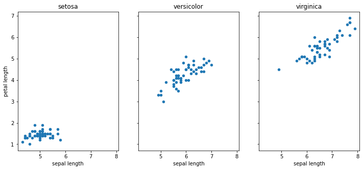

import pandas as pd
import matplotlib.pyplot as plt
from sklearn.datasets import load_irisQuarto Basics
Introduction to Quarto Report
For a demonstration of the capability of Quarto.
Setup
Data Preprocessing
Table 1 presents data on Iris dataset. All length and width are in centimeter (cm).
Code
iris = load_iris()
df = pd.DataFrame(data=iris.data, columns=iris.feature_names)
target = pd.Series(iris.target)
df["target"] = target.apply(lambda x, y: y[x], args=(iris.target_names,))
column_names = {c: c.replace(" (cm)", "") for c in df.columns}
df = df.rename(columns=column_names)
df| sepal length | sepal width | petal length | petal width | target | |
|---|---|---|---|---|---|
| 0 | 5.1 | 3.5 | 1.4 | 0.2 | setosa |
| 1 | 4.9 | 3.0 | 1.4 | 0.2 | setosa |
| 2 | 4.7 | 3.2 | 1.3 | 0.2 | setosa |
| 3 | 4.6 | 3.1 | 1.5 | 0.2 | setosa |
| 4 | 5.0 | 3.6 | 1.4 | 0.2 | setosa |
| ... | ... | ... | ... | ... | ... |
| 145 | 6.7 | 3.0 | 5.2 | 2.3 | virginica |
| 146 | 6.3 | 2.5 | 5.0 | 1.9 | virginica |
| 147 | 6.5 | 3.0 | 5.2 | 2.0 | virginica |
| 148 | 6.2 | 3.4 | 5.4 | 2.3 | virginica |
| 149 | 5.9 | 3.0 | 5.1 | 1.8 | virginica |
150 rows × 5 columns
Exploratory Data Analysis (EDA)
We will start our EDA process with the distribution of sepal length of each target.
Code
df.groupby("target")["sepal length"].hist(alpha=0.5, legend=True)
plt.show()We’ve created Figure 1 🎊. It seems like there is some pattern that can be used to identify whether the given data is setosa, versicolor or virginica.
In order to find a generalized model, we need to incorporate multiple aspects of data as possible. Therefore, we have to inspect other features as well. petal length seems to be a good start but does it give us new information? - We can explore this by displaying the relationship between sepal length and petal length.
Code
grouped_df = df.groupby("target")
_, axes = plt.subplots(1, 3, figsize=(12, 5), sharey=True, sharex=True)
for i, (n, g) in enumerate(grouped_df):
g.plot(x="sepal length", y="petal length", kind="scatter", ax=axes[i], title=n)

As shown in Figure 2, there is a linear relationship in versicolor and virginica. Though, this is not much clear for setosa. In addition, in each target group, their petal length and sepal length are in different range especially for petal length. virginica is likely to be the biggest in length and setosa is the smallest one.
What we can conclue that petal length looks like another important feature for modelling. However, when we use both sepal length and petal length, we should be careful of multicollinearity.
What about on the sepal width and petal width?
Code
_, axes = plt.subplots(1, 3, figsize=(12, 5), sharey=True, sharex=True)
for i, (n, g) in enumerate(grouped_df):
g.plot(x="sepal width", y="petal width", kind="scatter", ax=axes[i], title=n)You will see that from Figure 3, it has the similar behaviors between sepal width and petal width like in Figure 2. Therefore, they are the other interesting features to the model.